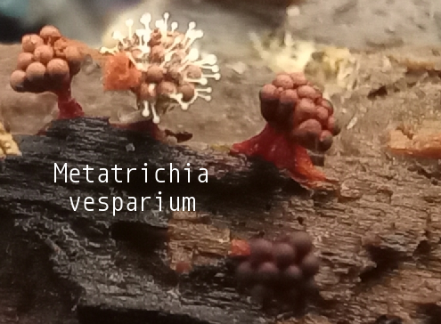

-

Urceolus cyclostomus
Urceolus cyclostomus is a species of flagellate, a single-celled protist that exhibits an emergent flagellum for movement. Members of the genus Urceolus are distinguished by the presence of a 'neck' at the anterior end of their oval-shaped cell, followed by a wide aperture or 'mouth' into a deep canal where the feeding groove and the flagellum originate. In addition, like other euglenids, the cell surface or pellicle is spiral-striped. In particular, U. cyclostomus is distinguished from other species of the genus by its more or less rigid and regular body shape, a less developed 'ingestive organelle' or feeding apparatus, and a more conspicuous 'hatching' (i.e. more pronounced stripes) of the pellicle. The posterior end of the cell is narrow, as is common in other euglenids. The cells are ovate, measuring 14–30 μm long and 4–18 μm wide. The cells move by crawling through the substrate, with the posterior end raised. The flagellum is around 1.5 times longer than the cell itself, 40–50 μm.
Kingdom: Protista
Phylum: Euglenozoa
Class: Euglenida
Order: Peranemida
Family: Peranemidae
-

Hemitrichia serpula
Fructification plasmodiocarpous, often covering several square centimeters, terete, branching freely and usually everywhere reticulate, rusty, tawny or bright yellow; peridium thin, transparent, with ir- regular, longitudinal dehiscence; hypothallus like peridium or a little darker, the margins between adjoining segments often separated by a black line; capillitium variable, a tangle of long yellow threads, sparingly branched, free everywhere except below, spinulose, the free tips spinose, acuminate, spiral ridges three or four, with traces of longitudinal strise; spore-mass golden yellow, spores beneath the lens pale yellow, globose, coarsely reticulate, 11—16 /x. The Plasmodium is at first milky white, becoming yellow. Found on rotten logs of every description, on the lower surface.
Kingdom: Protista
Phylum: Mycetozoa
Class: Myxomycetes
Order: Trichiales
Family: Hemitrichiaceae
-

Ceratiomyxa fruticulosa
Ceratiomyxa is a genus of plasmodial slime mould within the Eumycetozoa, first described by Pier Antonio Micheli. They are widely distributed and commonly found on decaying wood. The plasmodium often appears as white frost-like growth or thin watery layers on wood. Pillar or wall-like sporangia bud from the plasmodium and develop spores that undergo multiple divisions before they release flagellated zoospores. The zoospores will then pair off, undergo plasmogamy, and form zygotes that will later form new plasmodia. The genus currently contains 4 species. The most notable member is Ceratiomyxa fruticulosa, a slime mould found in most parts of the world. Other known species of Ceratiomyxa are mostly found in the tropics.
Kingdom: Protista
Phylum: Mycetozoa
Class: Ceratiomyxomycetes
Order: Ceratiomyxales
Family: Ceratiomyxaceae
-

Metatrichia vesparium
The fruiting body is a stalked sporangium that can be 1–1.5 mm tall. The sporotheca is obovate, usually in clusters, and is wine-red to dark maroon or nearly black. The stalk is solid and brick red. The capillitium is made up of long, free elaters that are bright red to deep crimson. The spores are brownish red in mass and reddish orange by transmitted light.Metatrichia vesparium is commonly found on decaying wood or bark, especially from broadleaf trees. It can also be found on dead leaves, living tree bark, and herbivore dung. Metatrichia vesparium is common and widespread in temperate regions of the Northern Hemisphere, but less common in tropical regions and the Southern Hemisphere.
Kingdom: Protista
Phylum: Amoebozoa
Class: Myxomycetes
Order: Trichiales
Family: Trichiaceae
-

Lepocinclis acicularis
Ovoidal to ellipsoidal, with a pointed caudal process and a circular cross section. Periplast rigid and ornamented with spiral striae. Chloroplasts numerous and discoid. Paramylum bodies usually two, large, and ring-shaped. Posterior spinous projection often short. Stigma sometimes present.
Kingdom: Protista
Phylum: Euglenozoa
Class: Euglenida
Order: Euglenales
Family: Phacaceae
-

Order Arcellinida
Arcellinid testate amoebae or Arcellinida, Arcellacean or lobose testate amoebae are single-celled protists partially enclosed in a simple test (shell). Arcellinid testate amoebae are commonly found in soils, leaf litter, peat bogs and near/in fresh water. They use their pseudopodia, a temporary cell extension, for moving and taking in food. Like most amoebae, they are generally believed to reproduce asexually via binary fission. However a recent review suggests that sexual recombination may be the rule rather than the exception in amoeboid protists in general, including the Arcellinid testate amoebae.
Kingdom: Protista
Phylum: Amoebozoa
Class: Tubulinea
Order: Arcellinida
Family: Unknown
-

Hemitrichia calyculata
Sporangia stalked, scattered to gregarious, 1-3 mm tall. Sporotheca turbinate to subglobose, erect, bright to dark yellow, 0.8-1.4 mm in diameter (when expanded). Stalk slender, reddish brown to black, 0.5-2.0 mm long, expanded at the top to form a distinct funnel-shaped cup. Hypothallus irregular or discoid, light to dark reddish brown. Peridium membranous, yellow, persisting in the lower half as a distinct calyculus that often has a petaloid margin. Capillitium: consisting of a dense network of smooth yellow threads, marked with four or five spiral bands, 5-7 µm in diameter. Spores pale yellowt, minutely spiny to delicately reticulate, 7-8 µm in diameter. Plasmodium: yellow, becoming red during fruiting. Found on decaying wood and (less commonly) bark, especially that from broadleaf trees.
Kingdom: Protista
Phylum: Mycetozoa
Class: Myxomycetes
Order: Trichiales
Family: Hemitrichiaceae
-

Stemonitis axifera
The erect, stalked cylindrical sporangia are arranged into bundles or clusters that are 7–15 mm (0.3–0.6 in) tall. Each sporangium is supported by a thin, shining, black stalk that is 3–7 mm (0.1–0.3 in) long. The bright rusty brown color of mature sporangia lightens to a pale brown after the spores have been dispersed. Spores measure 5 by 7 μm and have a smooth to minutely punctate surface texture.Stemonitis axifera requires about 20 hours to finish making its fruit bodies. Of this, eight hours are needed for induction of the sporangia and the development of the stalk and the columella, six hours more for the sporocarps to produce pigment and mature, and an additional six until the spores are discharged.
Kingdom: Protista
Phylum: Mycetozoa
Class: Myxomycetes
Order: Stemonitidales
Family: Stemonitidaceae